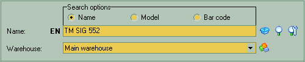
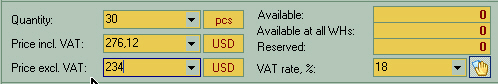
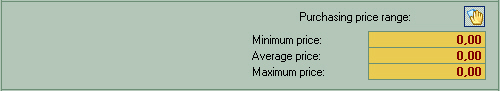
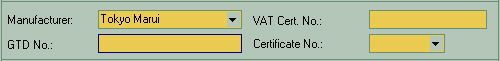
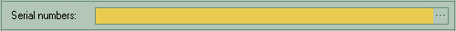
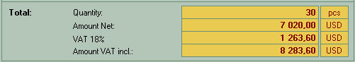

 This is the main product selection tools. Search Options allows you to define product search criteria..
The first input field is labeled as "Name", "Model" or "Barcode" . Here you enter actual product attribute to look for. Alternatively you may click on button on the right side to choose the product from the list. The last input field in this section is warehouse selector. Click on down arrow to choose from the list of warehouses where this product is available or |
||||||
 This section is used for specifying product quantity and prices. Quantity field specifies the quantity of product and unit of measure of the product to add to the document. Unit of measure entered here depends on the product you choose, so it is better to select it first. Unit of measure to the right of quantity field is for reference only. "Price incl. VAT" and "Price excl. VAT" - the price per one measurement unit, not full amount for all quantity. If VAT does not apply, enter zero under VAT rate, %. If you selected some pricing category above, the price will be calculated automatically so you won't have to enter it manually.
Right side of the window shows product quantity available at current and other warehouses. If the Reserved amount is non-zero, it indicates the total quantity of this product reserved at all warehouses. VAT rate - enter % VAT if applicable. It defaults to global or selected product setting. |
||||||
 This section is for information only. It allows you to monitor selling prices to make sure you keep the required margin. |
||||||
 This section is to display product manufacturer and VAT information, if applicable in your area. |
||||||
 Serial number(s) of individual product pieces listed if applicable |
||||||
 Various data on totals for information purposes. |